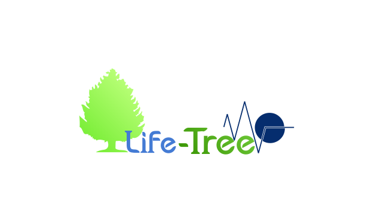

<!--ion-header class = "ion-no-border"> 
  <ion-toolbar >
    <ion-title  class = "centrado" size= "large">LifeTree</ion-title>
  </ion-toolbar>
</ion-header>

<ion-content class= "ion-padding">
    <ion-button color = "success" size= "large" expand="block" style="margin-top: 50%;" routerLink="/inicio">Entrar</ion-button> <!--routerLink="/ruta" es para añadirle una ruta al boton que al precionarlo este se diriga asi alla-->
    <!--ion-button class= "ion-padding" color = "success" expand = "block" routerLink="/inicio-admin">Administrador</ion-button>
  
    
</ion-content-->

<ion-content padding [fullscreen]="true">  
  <div class="welcome">
    
  </div>  
  <div id="container">    
      <ion-fab-button color="success" routerLink="/inicio">Entrar</ion-fab-button>
      <ion-button routerLink="/inicio-admin" fill="clear" color="success" size="small"   expand="block" class="ion-padding" >Admin</ion-button>    
  </div>
</ion-content>
